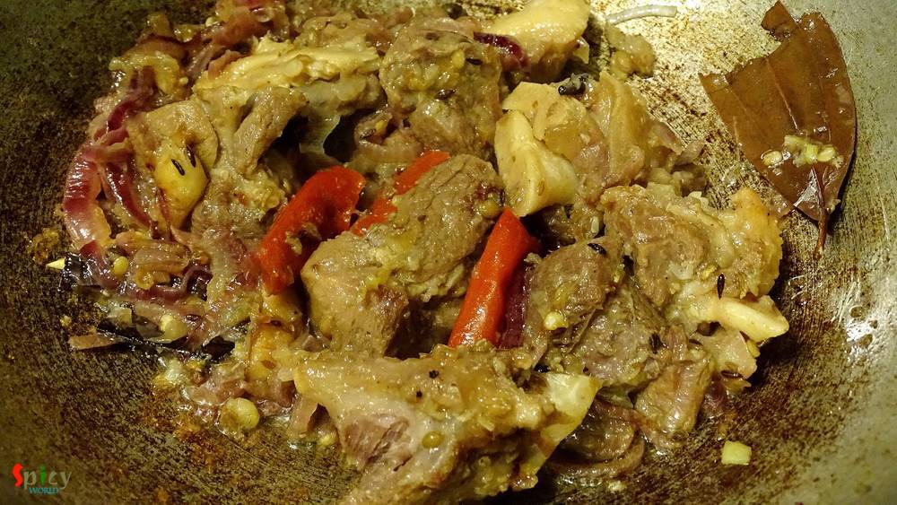

Simple and Easy Recipes
Mutton Pulao / Yakhni Pulao
© 2016 Spicy World, Published on: Feb 19, 2016
A good Indian maincourse dish is always paired well with various types of pulao or many types of bread. But sometimes pulao itself can become a very rich and heavy dish. Yes, I am talking about 'mutton pulao'. In this recipe, the rice will be cooked with the tasty mutton stock (yakhni). That is why this type of pulao become rich itself. We both are very much fond of 'yakhni pulao'. You just have to be perfect about the measurement. Try this in your kitchen and make your tummy happy !!

Ingredients
- 10 small size mutton pieces.
- 1 cup of basmati rice.
- 2 cups of thinly sliced onion.
- 1 Teaspoon of roughly chopped ginger.
- 2 Teaspoons of roughly chopped garlic.
- Whole spices (6 cloves, 2 small cinnamon stick, 1 Teaspoon of cumin seeds, 1 Teaspoon of coriander seeds, 1 bay leaf, 10 whole black pepper, 2 dry red chili).
- 1 Teaspoon of roasted coriander powder.
- Half Teaspoon of garam masala.
- 1 Teaspoon ghee.
- 4 Teaspoon white oil.
- Salt.
- Warm water.


Steps
Take a pressure cooker. Add 2 and half cups of water.
Then add a cup of onion slices, chopped ginger and garlic, dry red chilies.
Add cumin seeds, coriander seeds, whole black pepper corns, 4 cloves, 3 Teaspoons of salt.
Lastly add washed mutton pieces. Mix these things with a spatula and pressure cook this untill the meat become 85 % tender. Keep aside.
The stock or yakhni of the meat should be salty because the rice will cook in this juice.

Now take a pan. Heat 4 Teaspoon white oil.
Add bay leaf, cinnamon sticks, remaining cloves, half Teaspoon of cumin seeds. Saute them for 30 seconds.
Add a cup of thinly sliced onion. Fry it till golden.
In this add boiled mutton along with all those spices, onion, ginger and garlic. Keep the stock / yakhni separately.
Cook this entire thing for 10 minutes in high flame. You have to give the meat a nice brown color.
Then add the washed rice. Mix well.
Then add garam masala and coriander powder to the rice. Mix again gently.
After that add 2 cups of mutton stock / yakhni and a Teaspoon of ghee for 1 cup of rice. Bring the heat on high and let it boil.
Taste the juice at this point. It should be salty.
Now reduce the heat to low, cover the pan and cook this for 20 to 25 minutes.
Turn off the heat and let it rest for 5 - 7 minutes, then serve.
Your Yakhni Pulao is ready ..
Enjoy this warm with any type of light gravy ..
")